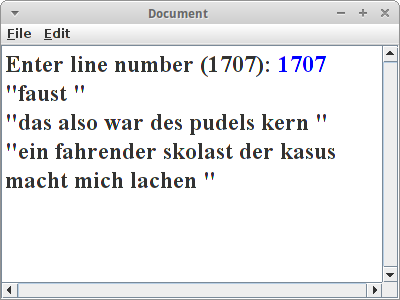

Text
Die wichtigsten Anwendungen für die wir unsere Computer verwenden haben mit Text zu tun. Das beginnt wahrscheinlich mit dem Browser, über Email und geht bis hin zu unserem Lieblings-Textverarbeitungsprogramm. Selbst SMS und WhatsApp haben mit Text zu tun. Etwas das wir dabei als sebstverständlich voraussetzen ist die Suche: sowohl in unseren Word Dokumenten, in unseren Dateien, und auch im Web. Ein Teil dieses Kapitel widmet sich effektiver Such-Algorithmen. Dazu gehören aber auch Spellchecker, Phonetische Suche und z.B. Plagiatserkennung. Dokumente können dabei sowohl Text Dokumente, wie z.B. eine Bachelorarbeit, aber auch HTML Dokumente sein. Aber auch eine DNA Sequenz kann man als Dokument bezeichnen, und unter bestimmten Umständen macht es auch Sinn digitalisierte Bilder als Dokumente zu bezeichnen. Viele der Algorithmen die wir hier sehen, werden u.a. in Spellcheckern, in DNA Analyse und auch in Spam Filtern verwendet, aber auch in der Betrugserkennung und der Fingerabdruckanalyse.
.
Search
Sehr häufig wollen wir ein gewisses Wort in einem Text finden. Dann verwenden wir einen Suchalgorithmus. Wir werden uns hier zwei näher ansehen. Der erste ist einfach ein Brute-Force Algorithmus: wir suchen den Pattern pat in dem Text txt, und die Methode soll ab der Position shift anfangen zu suchen:
private int search(String txt, String pat, int shift) {
final int m = pat.length();
final int n = txt.length();
for (int i = shift; i <= (n - m); i++) {
if (txt.substring(i, i + m ).equals(pat)) {
return i;
}
}
return -1;
}
Der Algorithmus geht im String txt einfach eine Position nach der anderen durch, beginnend bei shift, und vergleicht ob der Substring mit der Länge des Patterns ab der Position i im Text, gleich dem gesuchten Pattern ist. Wenn ja gibt er die Position zurück, ansonsten versucht er es weiter.
Der Brute-Force Algorithmus ist nicht der schnellste, sein Laufzeitverhalten ist im Schnitt O(m*n).
.
BoyerMoore
Etwas besser macht das der Boyer-Moore Algorithmus. Den versteht man am besten wenn man sich gleich ein konkretes Beispiel ansieht: wir versuchen in dem Text,
HERE IS A SIMPLE EXAMPLE
den Pattern,
EXAMPLE
zu finden. Wir beginnen damit, dass wir die beiden unter einander schreiben,
HERE IS A SIMPLE EXAMPLE EXAMPLE
Wir vergleichen den letzten Buchstaben im Pattern, 'E', mit dem Buchstaben an der gleichen Stelle im Text, dem 'S'. Da die beiden nicht gleich sind, brauchen wir die anderen Buchstaben davor gar nicht zu vergleichen.
Interessant ist aber weiter, dass das 'S' gar nicht im Pattern vorkommt. Deswegen dürfen wir für den nächsten Vergleich, den Pattern um seine ganze Länge nach rechts verschieben,
HERE IS A SIMPLE EXAMPLE EXAMPLE
Jetzt vergleichen wir das 'E' mit dem 'P'. Auch hier kein Match. Allerdings kommt das 'P' dieses mal im Pattern vor, und zwar an vor-vorletzter Stelle. Die Regel besagt jetzt, dass wir den Pattern so verschieben müssen, dass diese beiden 'P's untereinander sind:
HERE IS A SIMPLE EXAMPLE EXAMPLE
Nach diesem Verschieben, beginnen wir wieder die beiden von rechts nach links zu vergleichen:
HERE IS A SIMPLE EXAMPLE EXAMPLE
Das geht ganz gut aber beim 'A' gibt es keinen Match mehr. Also wieder nach dem 'I' im Pattern suchen. Kommt nicht vor, also dürfen wir den Pattern bis nach dem 'I' nach rechts verschieben:
HERE IS A SIMPLE EXAMPLE EXAMPLE
Jetzt müssen wir nach dem 'X' im Pattern suchen, und den Pattern um soviel verschieben, dass das 'X' unter dem 'X' ist:
HERE IS A SIMPLE EXAMPLE EXAMPLE
Wenn wir nun wieder unseren Vergleich von rechts beginnend machen, dann haben wir unseren Match gefunden.
Was wir hier verwendet haben ist die Bad-Character Regel des Boyer-Moore Algorithmus. Es gibt aber noch die Good-Suffix Regel, um die zu verstehen schaut man sich aber das Beispiel beim Herrn Moore persönlich an [1]. Das Laufzeitverhalten von Boyer-Moore ist im schlimmsten Fall zwar auch O(m*n), aber wenigstens für englischen Text hat er meistens ein Laufzeitverhalten von O(m+n+x), also praktisch linear in m+n, und das ist gut.
In Code sieht das dann so aus:
private int search(String txt, String pat, int shift) {
final int m = pat.length();
final int n = txt.length();
int[] badchar = new int[NO_OF_CHARS];
initBadCharHeuristic(pat, m, badchar);
while (shift <= (n - m)) {
int j = m - 1;
// chars of pattern and text are matching
while (j >= 0 && pat.charAt(j) == txt.charAt(shift + j)) {
j--;
}
if (j < 0) {
return shift; // we found pattern
} else {
shift += Math.max(1, j - badchar[txt.charAt(shift + j)]);
}
}
return -1;
}
wobei,
private void initBadCharHeuristic(String str, int size, int[] badchar) {
// initialize all occurrences as -1
for (int i = 0; i < NO_OF_CHARS; i++) {
badchar[i] = -1;
}
// fill the actual value of last occurrence of a character
for (int i = 0; i < size; i++) {
badchar[str.charAt(i)] = i;
}
}
Es gibt noch viele andere Pattern-Matching Algorithmen. Bekannt sind er Rabin-Karp Algorithmus [2] und der Knuth Morris Pratt (KMP) Algorithmus [3], welcher vor allem deswegen interessant ist weil er ein Laufzeitverhalten von O(m+n) hat.
.
Levenshtein
Wie funktioniert denn ein Spellchecker? Ein Spellchecker versucht Wörter zu finden, die ähnlich sind wie das Wort das wir falsch geschrieben haben. Was bedeutet ähnlich? Es heißt soviel wie, dass es in der Nähe ist, bzw. eine kleine Distanz entfernt ist. Wie misst man jetzt Distanzen zwischen zwei Strings? Dafür gibt es sogenannte String-Metriken [4] und die bekannteste dürfte die Levenshtein Distanz sein [5]. Man kann sie auch zur Korrektur bei der Digitalisierung von Dokumenten (OCR) verwenden, auch in der Genetik werden String-Metriken und ihre Nachfahren eingesetzt.
Die Levenshtein Distanz ist eine sogenannte Editierdistanz, d.h. sie zählt wieviele Edits minimal nötig sind um von einem String auf den anderen zu kommen. Edits sind dabei Einfüge-, Lösch- und Ersetz-Operationen. Als Beispiel berechnen wir die Levenshtein Distanz zwischen den Worten "kitten" und "sitting". Es sind drei Edits notwendig:
- ersetze 'k' durch 's',
- ersetze 'e' durch 'i' und
- füge ein 'g' am Ende an.
deswegen ist die Levenshtein Distanz 3.
Der Algorithmus ist ein rekursiver:
private int distance(String s, String t) {
int cost;
int len_s = s.length();
int len_t = t.length();
// base case:
if (len_s == 0 || len_t == 0) {
return len_s + len_t;
}
// test if last characters of the strings match
if (s.charAt(len_s - 1) == t.charAt(len_t - 1)) {
cost = 0;
} else {
cost = 1;
}
// return minimum of delete char from s, delete char from t, and delete
// char from both
return min(
distance(s.substring(0, len_s - 1), t) + 1,
distance(s, t.substring(0, len_t - 1)) + 1,
distance(s.substring(0, len_s - 1), t.substring(0, len_t - 1))
+ cost);
}
Diese Version ist nicht die schnellste, aber die verständlichste [5].
Interessant in diesem Zusammenhang ist auch noch die Hamming Distanz [6]: sie funktioniert nur für Strings gleicher Länge und entspricht einfach der Anzahl der Buchstaben die unterschiedlich sind. Etwas später werden wir noch die Longest Common Subsequence sehen. Die Referenz [7] ist eine interessante Quelle in diesem Zusammenhang.
.
Soundex
Beim Soundex Algorithmus [8] geht es darum Homophone, also gleichklingende Worte, zu finden. Z.B. "Robert" und "Rupert" klingen im Englischen sehr ähnlich, obwohl sie unterschiedlich geschrieben werden. Verwendet wird der Soundex z.B. für die phonetische Suche.
Der Soundex Algorithmus macht aus jedem Wort einen Soundex Code der aus einem Buchstaben (dem Anfangsbuchstaben) gefolgt von 3 Ziffern besteht. Z.B. wird aus "Robert" und "Rupert" der Soundex Code "R163". Berechnet wird der Soundex Code wie folgt:
- zunächst wandelt man den String in Großbuchstaben um;
- dann merkt man sich den ersten Buchstaben;
- vom String werden all "H" und "W" entfernt, außer dem ersten Buchstaben;
-
alle Konsonanten werden durch Zahlen ersetzt, und zwar:
"BFPV" -> 1, "CGJKQSXZ" -> 2, "DT" -> 3, "L" -> 4, "MN" -> 5, "R" -> 6; - es sollen keine Ziffern doppelt vorkommen, also z.B. aus "77757" wird "757";
- die Vokale "AEIOUY" (außer der erste Buchstabe) werden entfernt;
- zum Schluß wird der erste Buchstabe Buchstabe in dem String wieder mit dem ursprünglichen ersten Buchstaben ersetzt, dann werden drei Nullen angehängt, und davon dann die ersten vier Zeichen genommen. Das ist der Soundex Code.
Beispiele sind: "Robert" und "Rupert": R163, "Rubin": R150, "Ashcraft" und "Ashcroft": A261, "Tymczak": T522 und "Pfister": P236. Fertige Algorithmen findet man u.a. in der Apache Commons Codec [9].
Der Soundex Algorithmus ist für die englische Sprache optimiert, es gibt aber auch eine Version fürs Deutsche [10]. Der Algorithmus wurde ursprünglich von Robert C. Russell and Margaret King Odell entwickelt und patentiert. Heutzutage wird eher der Metaphone Algorithmus verwendet, der auch für andere Sprachen sehr gut funktioniert. Eine schöner Vergleich findet sich in [11].
.
Tries
Kommen wir zu einer ganz interessanten Datenstruktur, dem Trie. Das Wort ist eine Anspielung auf Tree, denn es handelt sich um eine Baumdatenstruktur, aber kommt von dem Wort retrieval, denn dafür wurde sie erfunden: zum Suchen. Ein Trie ist eine Datenstruktur in der man z.B. alle Wörter eines Dokumentes speichern kann. Er erlaubt es einem dann sehr schnell zu suchen, insbesondere auch nach Prefixen und Pattern [12,13].
Da es relativ aufwendig ist einen Trie anzulegen, macht es nur Sinn mit Tries zu arbeiten, wenn man häufiger als nur einmal ein Suche in einem Dokument machen muss. Deswegen eignen sie sich z.B. hervorragend für Suchmaschinen.
Standard Tries
Beginnen wir mit dem Standard Trie: es handelt sich um einen geordneten Baum bei dem der Wurzelknoten leer ist. Die Knoten eines Tries enthalten jeweils einen Character. Beim Standard Trie sind die Leaves leer, das muss aber nicht sein. Wenn wir einen String einfügen, z.B. das Wort "ulm", dann fügen wir einen Buchstaben nach dem anderen in den Trie ein, von der Wurzel beginnend. Geht man den Baum von der Wurzel zu den Blättern durch, dann erhält man wieder den String den man eingefügt hat. Das interessante sind jetzt Worte bei denen die ersten Buchstaben übereinstimmen, wie z.B. "um" und "ulm" beginnen beide mit "u". Für dieses erste "u" verwendet der Trie nur einen Knoten, ist also theoretisch sehr sparsam.
Die Datenstruktur Trie unterstützt die folgenden Methoden:
- add("stun"): fügt einen neuen String ein;
- startsWith("st"): testet ob es einen String gibt der mit "st" beginnt;
- contains("stun"): testet ob es den String "stun" gibt;
- nodesWithPrefix("st"): gibt alle Strings die mit "st" beginnen;
- prefixesThatMatch("s..n"): gibt nur die Prefixes der Strings die dem Pattern "s..n" entsprechen;
- nodesThatMatch("s..n"): gibt alle Strings die dem Pattern "s..n" entsprechen.
Vor allem die letzten beiden sind wunderbar für das Suchen geeignet. Die Laufzeiteigenschaften für Suchen, Einfügen und Löschen sind proportional zur Größe des Alphabets, d, und der Länge, m, des Strings der gesucht oder eingefügt wird, also O(d*m).
Extension
Es gibt eine Erweiterung zu den Standard Tries, die es auch erlaubt sich die Position eines Strings in einem gegebenen Dokument zu merken. Dazu betrachten wir das folgende Beispiel, eine alte Binsenweisheit unter Börsenprofis:
in ulm und um ulm und um ulm herum 0123456789012345678901234567890123
Wir fügen wie gewohnt unsere Strings in den Trie ein. Zusätzlich aber verwenden wir noch die ungenutzten Leaf Knoten, um uns die Position zu merken an der der String im Text vorkommt. Damit können wir dann nicht nur sagen ob ein bestimmtes Wort in einem Text vorkommt, sondern wir können auch noch sagen wo es vorkommt. Wir können daraus sogar das ursprüngliche Dokument wieder herstellen.
Other Tries
Wenn es einige sehr lange Worte gibt, dann geht die normale Trie Datenstruktur nicht sehr sorgfältig mit dem Speicher um. Für solche Szenarien gibt es die komprimierten Tries. Bei diesen werden die Enden komprimiert. Es gibt auch noch sogenannte Suffix Tries, die bei Suchen nach Teilstrings sehr hilfreich sein können.
.
Review
Nach einer kurzen Einführung in die Textsuche, haben wir uns kurz Editierdistanzen und phonetische Suche angesehen. Die Datenstruktur Trie wird uns gleich noch ein wenig weiter beschäftigen.
.
Projekte
Die Projekte In diesem Kapitel haben's in sich. Nicht vergessen, wir sind erst im zweiten Semester!
.
Rhymes
Ein wirklich einfach Anwendung der Trie Datenstruktur ist ein Programm für angehende Dichter. Wenn wir also Worte suchen die sich auf "cool" reimen, dann suchen wir nach allen Worten die auf "ool" enden. Der Trick ist die Worte falsch herum in einen Trie zu speichern.
Wir instanziieren den Trie:
private SimpleTrie trie = new SimpleTrie();
und in den Trie schreiben wir einfach unser gesamtes Wörterbuch
loadLexiconFromFile("dictionary_en_de.txt");
Beim Einfügen in den Trie
trie.add( reverseString(en.toLowerCase()) );
achten wir aber darauf, dass wir alle Worter falsch herum einfügen. Wenn wir dann nach Reimen suchen, ist das ganz einfach:
public void run() {
loadLexiconFromFile("dictionary_en_de.txt");
String word = readLine("Enter word to rhyme: ");
for (String s : trie.nodesWithPrefix( reverseString(word) )) {
println( reverseString(s) );
}
}
.
AutoComplete
Eine Trie Datenstruktur kann man auch dazu verwenden ein Auto-Complete zu implementieren. Wir laden wieder das englische Wörterbuch wie bei den Reimen in einen Trie. Nur dieses mal drehen wir die Wörter nicht herum. Wenn der Nutzer jetzt anfängt zu tippen, dann warten wir die ersten drei Buchstaben ab, ansonsten gäbe es zu viele Möglichkeiten. Dann aber suchen wir mit
trie.nodesWithPrefix(text)
nach einem Wort, das mit diesen drei Buchstaben beginnt. Da es wahrscheinlich mehr als nur ein Wort gibt, das mit diesen drei Buchstaben beginnt, wählen wir das kürzeste aus:
String suggestion = "hi there i am a very long string";
for (String s : trie.nodesWithPrefix(text)) {
if (s.length() < suggestion.length()) {
suggestion = s;
}
}
Hier könnte man bestimmt auch andere Heuristiken verwenden, aber einfach ist gut. Und das war es schon. Man könnte das Programm jetzt noch so erweitern, dass es beim Eingeben des Tab-Zeichens den momentanen Vorschlag übernimmt, und beim Eingeben des Leerzeichens den String nimmt den der Nutzer eingegeben hat, denn nicht alle Wörter sind im Wörterbuch.
.
Faust
Wenn man sich mit der Trie Datenstruktur erst einmal angefreundet hat, ist es überraschend was man mit ihr alles machen kann. Natürlich kennt jeder seinen Faust, wenigstens der Tragödie erster Teil. Aber wie war das mit dem "Pudels Kern" noch mal? Wir würden gerne wissen an welcher Stelle im Faust dieses Zitat vorkommt. Diese Art von Suche nennt man "Proximity" Suche. Wir wollen uns hier auf Suchen nach genau zwei Wörtern beschränken.
Zunächst definieren wir zwei Datenstrukturen:
private Trie<Integer> trie = new Trie<Integer>(); private List<String> text = new ArrayList<String>();
In trie speichern wir die Zeilennummern, und in text speichern wir den gesamten Text, dabei soll der Index einfach die Zeilennummer sein.
Wir lesen dann den Faust Zeile für Zeile, speichern die in die Liste text, und zusätzlich fügen wir sie in den trie: als Schlüssel verwenden wir immer zwei Wörter, previousToken und token, und als Wert die Zeilennummer:
private void loadLexiconFromFile(String fileName) {
try {
BufferedReader br = new BufferedReader(new FileReader(fileName));
int lineNr = 1;
while (true) {
String words = br.readLine();
if (words == null)
break;
text.add(words);
StringTokenizer st = new StringTokenizer(words, " ,.:;'!?-()\"");
String previousToken = "";
while (st.hasMoreTokens()) {
String token = st.nextToken().toLowerCase();
token = token.replace("ä", "ae");
token = token.replace("ö", "oe");
token = token.replace("ü", "ue");
token = token.replace("ß", "ss");
if (previousToken.length() > 0) {
trie.add(previousToken + "" + token, "" + lineNr);
}
previousToken = token;
}
lineNr++;
}
br.close();
} catch (Exception e) {
e.printStackTrace();
}
}
Die Suche nach Zitaten ist dann trivial:
String searchWords = readLine("Enter two words: ");
String[] words = searchWords.toLowerCase().split(" ");
Set<Integer> lineNrs = trie.get(words[0].trim() + words[1].trim());
println("The words occur in line(s): " + lineNrs);
Wenn man dann noch die Zeilen drum herum zitieren möchte, muss man nur in der text Liste nachsehen:
for (int nr : lineNrs) {
println("\"" + text.get(nr - 2) + "\"");
println("\"" + text.get(nr - 1) + "\"");
println("\"" + text.get(nr - 0) + "\"");
}
Interessant wäre jetzt noch zu wissen wie effektiv die Trie Datenstruktur ist, und was ihre Grenzen sind. Wenn man die kennt, wäre der nächste Schritt eine kleine Suchmaschine für die eigene Festplatte zu bauen: einfach alle Dateien durchgehen, alle Wörter einfach in den Trie schreiben, und als Wert verwendet man den Dateinamen.
JVM Monitor
Wir wollen also wissen wieviel Speicher unsere Trie Datenstruktur verbraucht. Dazu kann man den JVM Monitor verwenden [14]. Der kommt normalerweise mit Eclipse, man kann ihn aber auch im nachhinein noch installieren. Über Window > Show View > Other findet man ihn unter "Java Monitor". Im "JVM Explorer View" sieht man alle Programme die gerade in der JVM laufen. Man startet dann das Programm das man untersuchen möchte, also z.B. unser Faust Programm. Dann muss man rechts-klicken und "Start Monitoring" auswählen. Das macht dann ein neues "Properties" Fenster auf (hängt manchmal ein bischen, einfach zwischen den Fenstern hin- und herklicken). Und das sagt uns z.B., dass es von dem Trie.Node[] Array 104958 Objekte gibt, die insgesamt etwas mehr als 12 MByte verbrauchen.
Wenn wir bedenken, dass die Faust.txt Datei nur ca. 222 kByte groß ist, dann ist das ziemlich verschwenderisch. Allerdings scheint es linear zu skalieren und wir haben noch keinerlei Optimierungen vorgenommen.
File File Size Objects RAM Faust.txt 222 kByte 104958 12 MByte Ulysses.txt 1600 kByte 617142 74 MByte
.
Document
In diesem Beispiel wollen wir zeigen, dass man ein ganzes Dokument in einem Trie speichern kann, und das man es auch wieder rekonstruieren kann. Wir nehmen wieder unseren Faust. Unser Trie ist der gleiche wie gehabt, lediglich beim Parsen speichern wir jetzt zusätzlich zur Zeilennummer auch noch die Position,
int position = 1;
StringTokenizer st = new StringTokenizer(words, " ,.:;'!?-()\"");
while (st.hasMoreTokens()) {
String token = st.nextToken().toLowerCase();
// we assume lines are less than 100 chars!
trie.add(token, lineNr * 100 + position);
position += token.length() + 1;
}
lineNr++;
dabei gehen wir davon aus, dass es keine Zeilen gibt die mehr als 100 Zeichen haben. Damit ist das Laden des Tries erledigt.
Die Rekonstruktion ist allerdings nicht ganz trivial. Dabei verwenden wir folgende Datenstruktur:
Map<Integer, Map<Integer, String>> document;
Eine Map mit einer Map. Der Key in der ersten Map ist die Zeilennummer. Der Key in der zweite Map ist die Position in der Zeile, und der String ist einfach das Wort in der Zeile und an der Position. Will man dann die Zeile Nummer 1707, sagt man einfach:
Map<Integer, String>> sentence = document.get(1707);
Und wenn es sich hier um eine TreeMap handelt kann man einfach ein Wort nach dem anderen ausgeben.
.
CrosswordPuzzle
Meine Mutter ist kreuzworträtselsüchtig. Und so mit der Zeit geht das ganz schön ins Geld. Also dachte ich mir, muss man doch automatisch machen können. Stellt sich heraus automatisch Kreuzworträtsel zu generieren ist überraschend kompliziert. Aber mit dem Trie ist es gar nicht so schwer. Der Trick hier ist die nodesThatMatch() Methode des Tries. Z.B., liefert der Aufruf:
nodesThatMatch("s..n")
die Resultate "stun" und "stinks", wohingegen der Aufruf
nodesThatMatch("s..n..")
nur "stinks" liefert.
Um anzufangen benötigen wir ein paar Worte:
private final String[] words = { "ark", "card", "dad", "day", "dear",
"down", "east", "erase", "ever", "father", "itsy", "man", "mesh",
"near", "nerf", "send", "stinks", "stun", "sync", "yard" }
Bei Kreuzworträtseln ist es sinnvoll die Worte nicht einfach aus einem Wörterbuch zu nehmen, sondern solche die thematisch und vom Schwierigkeitsgrad irgendwie passen. Uns interessieren nur die richtigen Antworten, aber natürlich bräuchte man auch irgendwo die Fragen die dazu gehören.
Die Idee ist, dass wir im ersten Schritt unser Kreuzworträtsel definieren als 9x9 Array von chars:
private char[][] puzzle = new char[PUZZLE_SIZE][PUZZLE_SIZE];
dann initialisieren wir es mit lauter Punkten '.' und verteilen zufällig ein paar unserer Wort horizontal:
dad..send ..east... .....itsy nerf..... ...ark... .....sync mesh..... ...ever.. near.....
Die Worte die wir horizontal verteilen schreiben wir in Kleinbuchstaben. Interessant wird ein Kreuzworträtsel nicht dadurch, dass die Wörter einfach nur horizontal verteilt sind, sondern auch vertikal. Wenn wir uns das Beispiel oben ansehen, bemerken wir z.B. dass da Platz wäre für ein "fa.her" (rot markiert). Die Methode nodesThatMatch() ist genau was wir hier brauchen, wenn wir ihr
nodesThatMatch("fa.her")
übergeben, würde die uns "father" zurückliefern. Das war's eigentlich schon. Wir probieren einfach ein paar vertikale Wörter, zufällig, und schauen was rauskommt:
DaDM.Send AEEAsTI.S YVANCITSY nERFANSTN .RMARKYIC ..ETDSYNC MeSH..AKA A.HEveRSR NeaR..D.D
Passt doch. Unser Algorithmus ist nicht gerade besonders optimiert, er wird daher auch nur für relative kurze Worte funktionieren. Eine interessante Übung wäre es das Laufzeitverhalten dieses Algorithmus abzuschätzen.
.
Longest Common Substring
Sehr häufig müssen wir testen ob sich zwei Strings "ähnlich" sind. Zum Beispiel beim Programmieren, möchte man manchmal den Unterschied zwischen einer älteren und neueren Versionen wissen (z.B. UNIX diff command), oder wenn mehrere Personen an einem längeren Text arbeiten, möchte man wissen was sind denn die Änderungen zwischen verschiedenen Versionen des Dokuments. In der Wikipedia gibt es ab und an mal sogenannte "Editing Wars". Auch da möchte man gerne wissen was hat sich denn zur Vorgängerversion geändert. Und schließlich eine ganz wichtige Anwendung ist in der DNA Analyse: hier interessieren einen sehr häufig die Unterschiede zwischen zwei verschiedenen DNA Sequenzen.
Wenn wir einen Brute-Force Algorithmus verwenden um zwei Strings und all ihre Substrings zu vergleichen, dann funktioniert das nur für relativ kurze Strings, denn das Laufzeitverhalten dieses Algorithmus ist exponentiell, als O(2n). Zu unserem Glück gibt es aber einen Algorithmus der das Problem in polynomischer Zeit schaffen kann, und zwar O(m*n), wobei m die Länge des einen und n die Länge des anderen Strings ist. Der Algorithmus ist eigentlich ganz einfach, und wir wollen ihn an einem genetischen Beispiel demonstrieren.
Homer möchte wissen, ob Bart wirklich sein Sohn ist. Also hat er ein Haar von sich und eines von Bart geschnappt und an den DNA Shop geschickt. Zurück kam folgendes:
Homer = "GTTCCTAATA" Bart = "CGATAATTGAGA".
Was Homer jetzt machen muss, ist ein Stück kariertes Papier hernehmen, seinen DNA String entlang der x-Achse ausschreiben, und den von Bart entlang der y-Achse. Danach geht er einfach Zeile für Zeile durch und macht einfach in jedes Kästchen ein Kreuzchen wo beide Strings den gleichen Buchstaben haben. Wenn er dann die Kästchen die sich zu Diagonalen zusammenschließen, markiert, dann findet er die Übereinstimmungen in den beiden DNAs. Man sucht also nach dem größten gemeinsamen Teilstring []. Ich würde mal sagen, dass grob 50% der DNA übereinstimmen, also alles in Ordnung.
.
Longest Common Subsequence
Während wir oben nach einem exakten Match gesucht haben, erlauben wir bei der Suche nach der Longest Common Subsequence [18] auch Fehler:
Der Algorithmus ist sehr ähnlich, mit dem gleichen Laufzeitverhalten. Man trägt wieder die beiden zu vergleichenden Strings an der x- und y-Achse auf. Im Unterschied zum obigen Beispiel benutzt man jetzt aber einen Zähler, den man am Anfang auf 0 setzt.
- man fängt oben links an, und schreibt in die nullte Zeile und Spalte lauter Nullen;
- man geht dann entlang der x-Achse, und jedes Mal wenn die Buchstaben übereinstimmen, erhöht man den Zähler um eins;
- in der nächsten Zeile geht wieder entlang der x-Achse. Jetzt kommt es darauf an ob die Buchstaben übereinstimmen, dann wird wieder hochgezählt, oder ob der Wert in der Zelle davor oder darüber höher ist. Es wird immer der höhere Wert übernommen;
- das Ganze macht man so lange bis man alle Zeilen durch hat.
Den Wert den der Zähler am Ende hat, ist die längste gemeinsame Teilsequenz. Die Sequenz selbst erhält man, wenn man der Diagonale folgt, in der die Werte des Zählers höher werden. Ein sehr schöne Animation der ganzen Prozedur findet man auf Youtube [19].
.
DotPlot
Der Dotplot (dt. Punktauftragung) [20] ist eine Anwendung des Longest Common Substring Algorithmus, der vor allem in der Bioinformatik sehr populär ist [21]. Die visuelle Darstellung ist wirklich super-easy, und das kann sogar ein Erstsemester. Wir bitten unseren User einfach zwei Strings einzugeben:
public void run() {
IODialog dialog = new IODialog();
String s1 = dialog.readLine("Enter first string:");
String s2 = dialog.readLine("Enter second string:");
showSimilarity( s1, s2 );
}
die wir dann in der Methode showSimilarity() visuell darstellen:
private void showSimilarity(String s1, String s2) {
for (int i = 0; i < s1.length(); i++) {
for (int j = 0; j < s2.length(); j++) {
if ( s1.charAt(i) == s2.charAt(j) ) {
GRect pixel = new GRect(BLOCK_SIZE, BLOCK_SIZE);
pixel.setFilled(true);
add( pixel, i*BLOCK_SIZE, j*BLOCK_SIZE );
}
}
}
}
Wir haben zwei verschachtelte Schleifen, die eine geht durch alle Buchstaben des ersten Strings, und die zweite durch alle Buchstaben des zweiten Strings, und falls die beiden Buchstaben gleich sind, zeichnen wir einfach ein kleines Rechteck.
Wenn wir für den ersten String und den zweiten String das gleiche Wort eingeben, dann kommt einfach eine gerade Linie heraus. Interessant wird's wenn wir mal ein Palindrom eingeben. Dann kommt da ein 'X' heraus. Auch Fast-Palindrome geben interessante Muster:
- abcdefgh
- lagerregal
- abracadabra
- max i stay away at six am
Es ist ziemlich offensichtlich, dass diese visuelle Darstellung hilft bestimmte Regelmäßigkeiten auf einfach Art und Weise zu entdecken.
Gehen wir aber einen Schritt weiter, denn wir wollen ja den Longest Common Substring finden. Glücklicherweise finden wir in der Wikipedia Pseudocode der sich ganz einfach in Java übertragen lässt [17]:
private String findLargestCommonSubstring(String S, String T) {
int[][] L = new int[S.length()][T.length()];
int z = 0;
int endIndex = 0;
for (int i = 0; i < S.length(); i++) {
for (int j = 0; j < T.length(); j++) {
if (S.charAt(i) == T.charAt(j)) {
if (i == 0 || j == 0) {
L[i][j] = 1;
} else {
L[i][j] = L[i-1][j-1] + 1;
}
if ( L[i][j] > z ) {
z = L[i][j];
endIndex = i;
}
} else {
L[i][j] = 0;
}
}
}
if ( z > 0 ) {
return S.substring( endIndex-z+1, endIndex+1 );
}
return null;
}
Die Länge der Übereinstimmung des Strings ist ein Meßgröße dafür wie ähnlich sich die beiden Strings sind.
.
Horse, Minke Whale and Kangaroo
Als angehende Bioinformatiker würden wir gerne die phylogenetische Beziehungen zwischen Pferd, Zwergwal und rotem Känguru bestimmen. Im internet findet man "The Basic Local Alignment Search Tool (BLAST)" [22] und wenn man dort "horse ribonuclease pancreatic" als Suchbegriff eingibt findet man:
horse horse ribonuclease pancreatic >sp|P00674|1-128 KESPAMKFERQHMDSGSTSSSNPTYCNQMMKRRNMTQGWCKPVNTFVHEPLADVQAICLQ KNITCKNGQSNCYQSSSSMHITDCRLTSGSKYPNCAYQTSQKERHIIVACEGNPYVPVHF DASVEVST minke whale balac ribonuclease pancreatic >sp|P00673|1-124 RESPAMKFQRQHMDSGNSPGNNPNYCNQMMMRRKMTQGRCKPVNTFVHESLEDVKAVCSQ KNVLCKNGRTNCYESNSTMHITDCRQTGSSKYPNCAYKTSQKEKHIIVACEGNPYVPVHF DNSV red kangaroo macru ribonuclease pancreatic >sp|P00686|1-122 ETPAEKFQRQHMDTEHSTASSSNYCNLMMKARDMTSGRCKPLNTFIHEPKSVVDAVCHQE NVTCKNGRTNCYKSNSRLSITNCRQTGASKYPNCQYETSNLNKQIIVACEGQYVPVHFDA YV
Wenn man diese Daten einfach mittels unseres DotPlot Programms anzeigen lässt, erkennt sogar der Laie, dass es da eine Beziehung zwischen den dreien gibt.
.
Jurassic Park
Kommen wir zu unserem letzten Beispiel aus der Genanalyse: wir würden gern wissen wie nahe sind die heute lebenden Elephanten, also der afrikanische und der indische, mit dem Mammut verwandt [23]? Ein paar der DNA Schnipsel findet man auf den Webseiten des National Center for Biotechnology Information [24]. Dort kann man in der Nucleotide Datenbank suchen. Unter den folgenden Kürzeln [23],
African elephant: DQ316069 Asiatic elephant: DQ316068 Woolly mammoth: DQ316067 N. American mastodon: EF632344 Rock hyrax: NC_004919 Dugong: NC_003314
findet man DNA Schnipsel der entsprechenden Spezies. Wenn wir die einfach mit unserem simplen DotPlot Programm laden, dann sieht man zwar eine Diagonale, aber man sieht auch viel Unsinn. Das hat damit zu tun, dass mit den Buchstaben "ACGT" eben keine besonders große Vielfalt im DNA Alphabet exisitiert. Was die Genetiker hier machen, sie zeichnen nur dann Punkte, wenn die diagonalen Linien eine gewisse Mindestlänge haben, z.B., nur wenn mindestens sechs Aminosäuren übereinstimmen zeichnen wir diese. Wenn wir wollen könnten wir unser DotPlot Programm so verbessern, dass es genau das tut.
.
Challenges
.
Plagiation
Eine weitere interessante Anwendung für den Longest Common Substring Algorithmus, ist die Erkennung von Plagiaten. Wir wollen die Hausarbeiten von sechs Studierenden (Richard, Mary, James, Robert, Jessica und Susan) vergleichen. Dazu generieren wir die DotPlots für alle möglichen Kombinationen, also 2 aus 6. Diese kombinieren wir dann zu einer gemeinsamen großen Übersichtsgrafik: dort tragen wir die Namen der Studierenden jeweils an der x- und y-Achse auf, und zeichnen in der jeweiligen Zelle den DotPlot zwischen den Hausarbeiten der beiden Studierenden.
In der Übersichtsgrafik kann man sofort erkennen, dass Jessica und Robert zusammen gearbeitet haben, während Susan alleine gearbeitet hat. Das sieht man an den langen, durchgezogenen Diagonalen. Je länger oder je mehr, desto größer ist die Übereinstimmung. Bei den anderen sieht man unterschiedlich große Übereinstimmungen, die natürlich teilweise auch zufällig sein können.
Um die Übereinstimmungen visuell noch stärker hervortreten zu lassen, kann man die jeweiligen DotPlots noch mit einer Hintergrundfarbe versehen. Weiß bedeutet so viel wie keine Übereinstimmungen, während rot hingegen eine große Übereinstimmung andeutet. Wie misst man denn die Übereinstimmung? Hier gibt es mehrere Ansätze: der einfachste, man nimmt einfach die Länge des längsten gemeinsamen Substrings, und teilt ihn durch die Länge des Gesamtstrings. Man könnte auch mehrere kleine Übereinstimmungen nehmen, deren Länge aufaddieren und dann skalieren. Interessanterweise funktioniert die einfach Variante aber bereits recht gut.
Eine interessante Frage die man sich stellen sollte ist, wie ist denn das Laufzeitverhalten dieses Projektes?
.
Research
Zu diesem Kapitel gibt es sehr interessante Research, wenigstens wenn man sich dafür interessiert wie eine Suchmaschine funktioniert.
.
diff
Der diff Utility vergleicht zwei Dateien und zeigt die Unterschiede an. Es basiert auf der Lösung der längsten gemeinsamen Teilsequenz. Weitere Details finden sich in Referenz [25].
.
Wie funktioniert denn eine Suchmaschine? Gerade im Faust Beispiel haben wir eigentlich schon gesehen wie. Man scannt eben nicht nur ein Dokument, sondern sehr viele, z.B. das Web. Die Dokumente sind in dem Fall HTML Seiten. Die bereitet man etwas auf, also man entfernt alles was unnötig ist, wie HTML Tags, Stopwords und man vereinfacht die Grammatik. Was dann übrigbleibt speichert man in einem Trie. Allerdings speichert man nicht die Zeilenzahl, sondern die Webseite als Wert. Falls es mehrere Webseiten zu einem Wert gibt, dann speichert man eine Liste (oder Set) von Webseiten. Diesen Trie nennt man auch manchmal "Inverted Index" [15]. Je nachdem wieviele Seiten man hat, passt dieser Trie nicht mehr in den RAM, da muss man sich dann Gedanken machen wie man das am besten macht mit Hilfe von Festplatten. Was noch fehlt ist natürlich ein Ranking, dazu dürfte die Lektüre von Referenz [16] ganz interessant sein. Der Rest ist Geschichte, wie es so schön heißt.
.
Suffix Tries
Für die Suche sind Suffix Tries sehr wichtig. Man sollte mal im Internet nach ihnen suchen.
.
Fragen
-
In welchem Kontext wird der Boyer-Moore-Algorithmus verwendet?
-
Hat ein Trie genügend informationen, um den Ursprungstext komplett zu rekonstruieren? Ist es effizienter, den Text in Form eines Trie oder als Klartext zu speichern?
-
In einem der Aufgaben schrieben wir ein kleines Programm, um unseren Dichterfreunden zu helfen, bessere Reime zu schaffen. Welche Datenstruktur haben wir benutzt, um gute Reime zu finden?
-
In den Übungen sahen wir ein Beispiel, wie man Plagiate identifiziert, oder genauer, wie man Copy-Paste Plagiate entdeckt. Welchen Algorithmus würden Sie verwenden, um Plagiate zu erkennen?
-
Für die folgenden Strings konstruieren Sie einen Standard-Trie:
- idea, idiot, idle, hit, hour, house
- humid, stupid, stop, hungry, bear, hunger, stock
-
Fischers Fritz fischt frische Fische, frische Fische fischt Fischers Fritz.
-
Bei der Rechtschreibprüfung (spell checker) geht es darum festzustellen ob ein Wort richtig geschrieben wurde. Welche Datenstruktur ist dafür am besten wenn es sich um eine etwas kompliziertere Sprache, wie z.B. das Deutsche, handelt?
-
Vergleichen Sie die beiden Strings "GCTTCGTAACT" und "CTATGATACTG". Finden Sie den größten gemeinsamen Teilstring.
- Was ist der Unterschied zwischen "longest common substring" (längste gemeinsamer Teilstring) und "longest common subsequence" (längste gemeinsame Teilsequenz)?
.
Referenzen
In diesem Kapitel gibt es ungewöhnlich viele Referenzen.
[1] The Boyer-Moore Fast String Searching Algorithm, www.cs.utexas.edu/users/moore/best-ideas/string-searching/
[2] Rabin-Karp Algorithm, Searching for Patterns | Set 3 (Rabin-Karp Algorithm), www.geeksforgeeks.org/searching-for-patterns-set-3-rabin-karp-algorithm/
[3] Knuth Morris Pratt (KMP), Searching for Patterns | Set 2 (KMP Algorithm), www.geeksforgeeks.org/searching-for-patterns-set-2-kmp-algorithm/
[4] String metric, https://en.wikipedia.org/wiki/String_metric
[5] Levenshtein distance, https://en.wikipedia.org/wiki/Levenshtein_distance
[6] Hamming distance, https://en.wikipedia.org/wiki/Hamming_distance
[7] amatch - Approximate Matching Extension for Ruby, https://github.com/makaroni4/amatch
[8] Soundex, https://en.wikipedia.org/wiki/Soundex
[9] Apache Commons Codec 1.10 API, https://commons.apache.org/proper/commons-codec/apidocs/overview-summary.html
[10] Kölner Phonetik, https://de.wikipedia.org/wiki/Kölner_Phonetik
[11] Using Fuzzy Matching to Search by Sound with Python, Doug Hellmann, informit.com/articles/article.aspx?p=1848528
[12] Data Structures and Algorithms in Java, M.T. Goodrich and R. Tamassia
[13] Tries, algs4.cs.princeton.edu/52trie/
[14] JVM Monitor, jvmmonitor.org/index.html
[15] Inverted index, https://en.wikipedia.org/wiki/Inverted_index
[16] The Anatomy of a Large-Scale Hypertextual Web Search, Engine Sergey Brin and Lawrence Page, infolab.stanford.edu/~backrub/google.html
[17] Longest common substring problem, https://en.wikipedia.org/wiki/Longest_common_substring_problem
[18] Longest common subsequence problem, https://en.wikipedia.org/wiki/Longest_common_subsequence_problem
[19] Longest common subsequence algorithm -- example, https://www.youtube.com/watch?v=P-mMvhfJhu8
[20] Dot plot (bioinformatics), https://en.wikipedia.org/wiki/Dot_plot_(bioinformatics)
[21] Introduction to Bioinformatics, A.M. Lesk, Oxford University Press, 2005
[22] The Basic Local Alignment Search Tool (BLAST), www.uniprot.org/blast/
[23] The evolution of mammoths and their living relatives - DNA to Darwin, www.dnadarwin.org/casestudies/10/FILES/MammothSG2.0.pdf
[24] National Center for Biotechnology Information, https://www.ncbi.nlm.nih.gov/nuccore/
[25] diff utility, https://en.wikipedia.org/wiki/Diff_utility
.